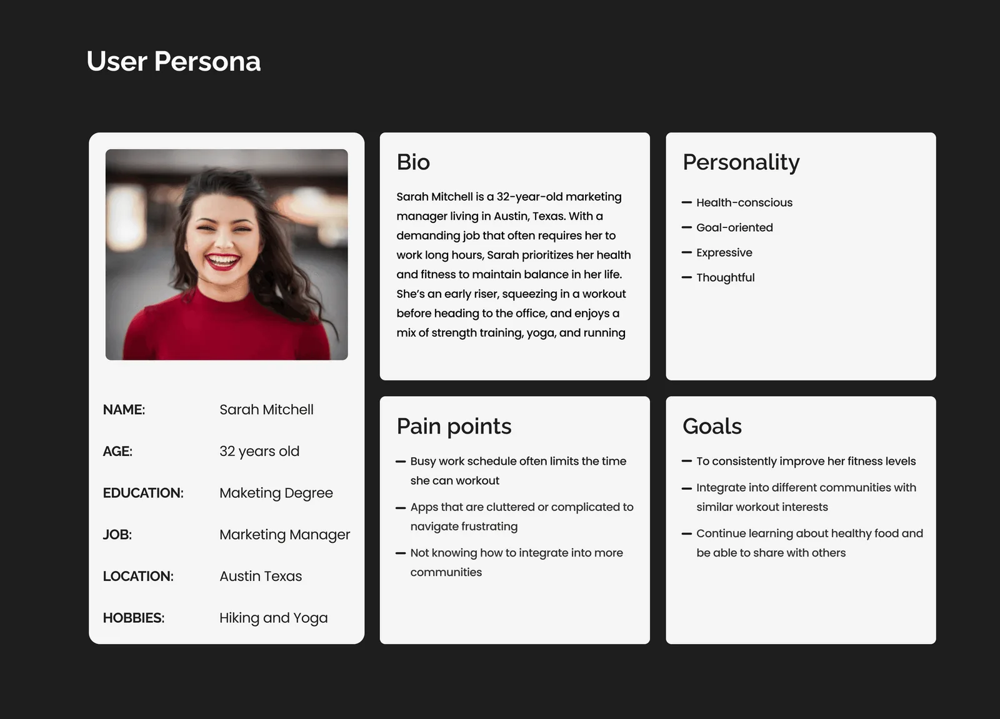
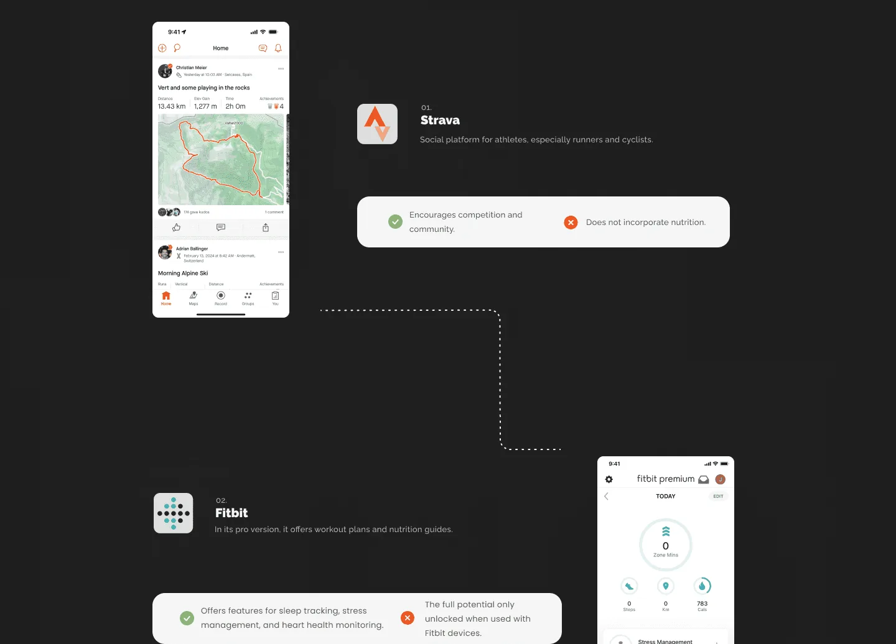
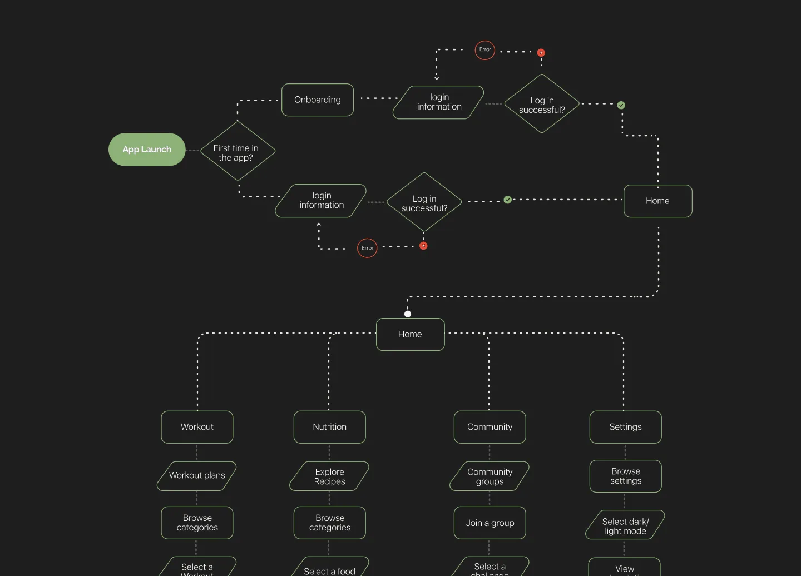
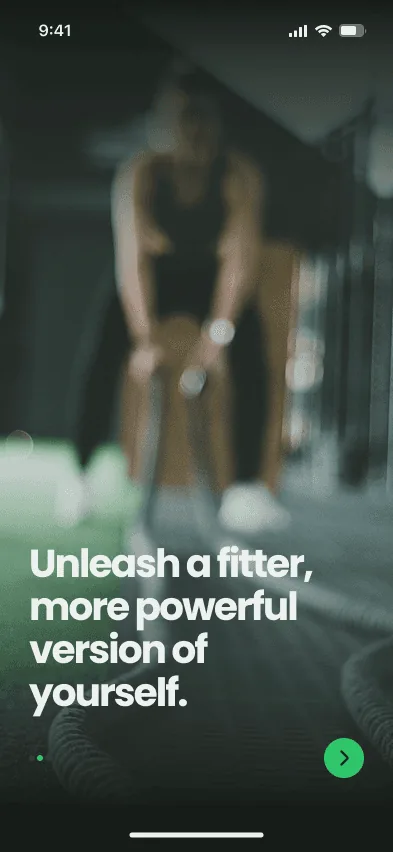
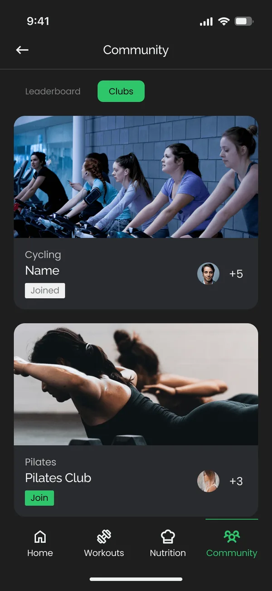

Caso de estudio · 03 · App conceptual
FitFlex
Un concepto de app de fitness con entrenamientos personalizados, nutrición y una comunidad que te ayuda a ser constante.
Un proyecto conceptual para repensar la experiencia y la identidad visual de una app de fitness, que ayude a la gente a cumplir sus objetivos con planes a medida, seguimiento del progreso y amigos que los motivan.
Entrenamientos, comidas y amigos en una sola app
FitFlex junta entrenamiento, nutrición y comunidad, para que el progreso sea algo que compartís en lugar de algo que seguís en solitario. La pantalla de inicio abre con tus estadísticas y con lo que están haciendo tus amigos.
Mirá la experiencia completa, paso a paso, en el capítulo 05 ↓Muchas apps de fitness, cada una resuelve una parte
Quien quiere ponerse en forma usa varias apps a la vez, una para registrar sus salidas a correr, otra atada a un wearable, otra para anotar comidas. Cada una es buena en lo suyo, y ninguna hace que entrenar se sienta como algo que hacés con otras personas.
FitFlex es una iniciativa propia. Tenía una idea para una app de fitness y quería convertirla en un prototipo para mostrarles a mis amigos.
La motivación se apaga rápido cuando entrenás solo
A los usuarios les costaba ser constantes con sus entrenamientos. La experiencia era chata, con poco espacio para conectar con amigos, compartir el progreso o sentirse parte de una comunidad. Querían una app que les permitiera entrenar junto a sus amigos y mantenerse comprometidos.
- 01Una experiencia poco atractiva que no hacía volver a los usuarios
- 02Poca interacción social, así que no había compromiso ni motivación
- 03Ninguna forma fácil de compartir el progreso o entrenar con amigos
El desafío no era otro registro de entrenamientos. Era convertir la constancia en algo compartido.
Conocé a Sarah, y después mirá lo que usa
Combiné un benchmark de la competencia con un mapa de empatía y una persona, y después mapeé la experiencia completa. Sarah Mitchell, de 32 años, es gerente de marketing y entrena antes de trabajar. Sus dolores son una agenda apretada, apps recargadas y ninguna forma fácil de entrar a comunidades de fitness.


Tres hallazgos marcaron el rumbo
- 01El mercado premiaba la comunidad, pero ninguna app la combinaba bien con nutrición y facilidad de uso
- 02La motivación se caía sin compromiso social ni progreso visible
- 03Una agenda apretada y apps recargadas y difíciles de navegar eran las mayores barreras para la constancia

Responder cada hallazgo con una parte de la app
Cada hallazgo de la investigación tuvo una respuesta directa en el producto, unida por un pequeño sistema de diseño creado desde cero.
- Qué encontramosCómo responde la app
- La motivación se cae sin compromisoFunciones sociales, desafíos grupales y un feed de progreso
- Ninguna app combina comunidad con nutriciónEntrenamiento, Nutrición y Comunidad en una sola app
- Apps recargadas y difíciles de navegarCuatro secciones claras en una barra de navegación simple
- Una agenda apretada deja poco tiempo para explorarUn inicio que muestra primero tus estadísticas y tus amigos
Un sistema chico para una identidad audaz
Tipografía en Raleway y Poppins, una escala de espaciado y una paleta de color completa con modo claro y oscuro, creadas desde cero para que cada pantalla hable el mismo idioma.
Una mañana con FitFlex
Las cuatro secciones siguen cómo entrena Sarah en la realidad. Se fija cómo viene, elige un entrenamiento, planifica sus comidas y se mantiene conectada.
Una primera impresión fuerte
La pantalla de bienvenida marca el tono con una foto a pantalla completa y una sola frase segura, antes de entrar a la app.

Tu progreso, y el de tus amigos
El inicio abre con un anillo de objetivo semanal (7 de 10 entrenamientos) con pasos, tiempo y calorías. Justo abajo aparecen los amigos activos con sus propios anillos de progreso, y cada entrenamiento sugerido muestra qué amigos también lo hacen.

Elegí un entrenamiento en segundos
Los entrenamientos se filtran por Favoritos, Cardio, Fuerza y Yoga. Cada tarjeta muestra la dificultad y la duración de entrada, algo que importa cuando tenés poco tiempo antes de trabajar.

Comidas, con un toque social
“Today’s Choices” muestra qué están comiendo tus amigos, y después las comidas se filtran por momento del día con las calorías en cada tarjeta. La nutrición está al lado del entrenamiento en lugar de en otra app.

Entrenar juntos
Los clubes y un ranking convierten los entrenamientos en solitario en entrenamientos compartidos. Cada club muestra quiénes ya están, y sumarse lleva un toque.

Un concepto es una hipótesis hasta que la gente lo usa
FitFlex todavía no se probó con usuarios. Este es el plan para comprobar su idea central, que entrenar con amigos ayuda a la gente a ser constante.
- La preguntaCómo lo probaría
- ¿Puede un usuario nuevo empezar un entrenamiento en menos de un minuto?Test de usabilidad moderado con 5 personas que entrenan antes o después de trabajar. El éxito es que 4 de 5 empiecen uno sin ayuda.
- ¿Se entienden las cuatro secciones de un vistazo?En las mismas sesiones, pedirles que encuentren una comida, un club y su progreso semanal, y anotar dónde dudan.
- ¿Los amigos realmente hacen que la gente siga entrenando?Un piloto de 4 semanas que compare a quienes se suman a un club con quienes entrenan solos. Medir entrenamientos por semana y quiénes siguen activos después de 30 días.
La constancia es un problema social
La investigación apuntaba en una dirección. Las funciones sociales son las que mantienen a la gente constante. FitFlex está construida alrededor de esa idea, y el plan de pruebas de arriba es cómo lo comprobaría.


Construyamos algo que valga la pena lanzar
Briefs, colaboraciones o una consulta rápida. Leo todo y suelo responder en un par de días hábiles.